Darstellung (QA R1 §1): Jedes Bauteil steht oben als 3D-Render in Knet-Material aus den Track-Core-Körpern, mit Schnitt durch das Profil (dunkle Schnittfläche). Die 2D-Skizze daneben ist nur der Lageplan.
Lesehilfe: Unter jeder Skizze steht, was verbindlich ist (Bauteile, Maße, Reihenfolge, wer was berührt) und was nur schematisch gezeichnet ist (Silhouetten, Längen, Farben). Gebaut wird das Verbindliche.
Der Atlas v0.15 hat Anforderungen erfüllt, aber nichts gebaut. Hier steht für jeden Katalog-Eintrag zuerst die Baugeschichte in der Inselwelt, dann die Bauteile, die daraus folgen, dann die Prüfung. Gebaut wird nur, was sich so erzählen lässt.
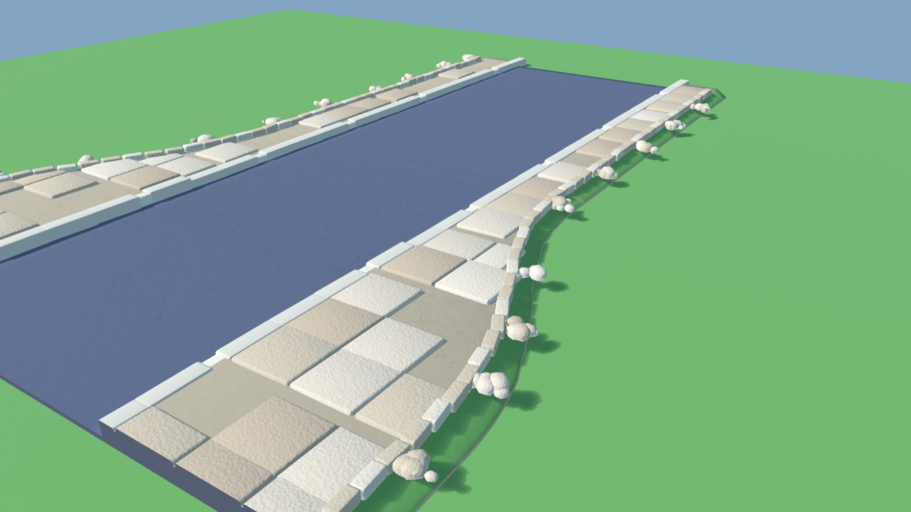
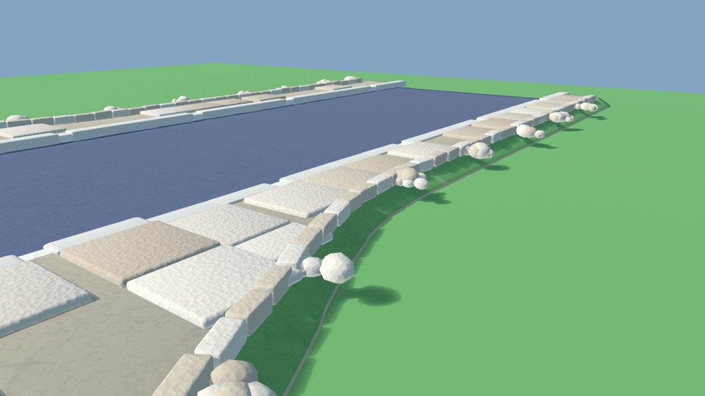
Die Pflasterer der Stadt legen von der Bordkante aus. Die erste Reihe liegt an der Anlegekante, die Reihen laufen im Läuferverband (halber Versatz). An der Hinterkante, an Verjüngungen und an Enden wird jeder Stein, der nicht passt, mit der Trennscheibe auf die Kante geschnitten. Ein Stein schmaler als ¼ wird nie gelegt: Dann wird der Nachbar länger geschnitten. Zum Schluss setzen sie gerundete Kantensteine an die Schnittkante, davor bleibt etwas Rubbel liegen. Das ist der Fall „gebaute Kante“: Die Stadt hat bis hier gebaut. Läuft ein Weg dagegen frei in die Wiese aus, gilt das nächste Blatt: ein Ende, das verfallen ist.
flächendeckend: Gehwegfläche = Plattenfläche + Fugen (Abweichung 0) · kleinstes Stück ≥ 0,4 · jede Schnittkante hat Kantenstein
Verbindlich (Konstruktion): Plattenmaß 1,6 × 1,6, Fuge 0,06, Läuferverband ab Bordkante, Zuschnitt an jeder Kante, Mindeststück 0,4, Kantenstein 0,14 an Schnittkanten
Schematisch: Gehwegbreiten und Verziehungslänge (Beispiel), Farben
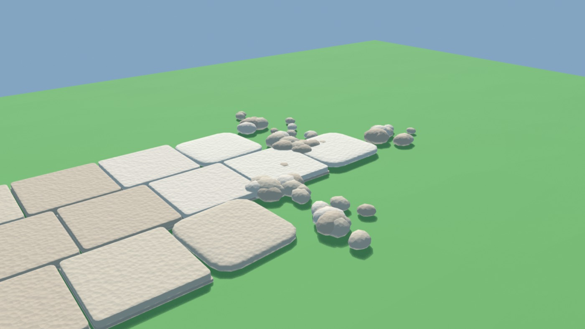
Niemand hat dieses Ende gebaut, es ist mit der Zeit zerfallen. Übrig sind ganze große Platten. Die letzten drei treten gestaffelt zurück und bilden zusammen das gerundete Endstück, an den Ecken abgerundet und leicht gekippt. Aus den Stufen dazwischen kommt Rubbel aus denselben Steinen: dicht in den Ecken der Staffel, nach außen auslaufend. Sand liegt nur in den Fugen, nie über den Rand hinaus. Der Übergang ist kurz, eine bis zwei Plattenlängen.
kein gerader Rand · kein Rubbel-freier Kantenstreifen · Übergang 1–2 Plattenlängen
Verbindlich (Konstruktion): nur ganze Platten, gestaffeltes Endstück aus den letzten drei, Rubbel gehäuft in den Stufen, kurz (1–2 Plattenlängen)
Schematisch: genaue Lage und Drehung der Steine (fester Seed in der Welt)
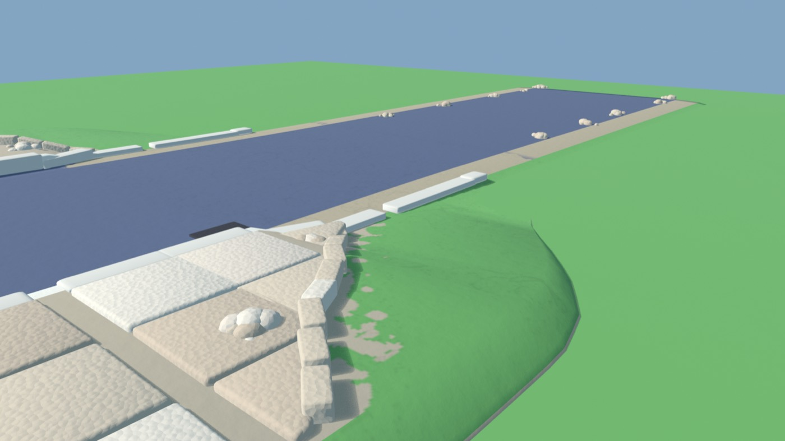
Ein Bord ändert seine Höhe nie im Stein. Die Steinsetzer setzen einen Übergangsstein mit schräger Oberseite (Hochbord 0,35 → Tiefbord 0,08) und lassen den Bord mit einem gerundeten Bordsteinkopf enden. So bauen sie Absenkungen an Furten und Zufahrten und das Ende des Bords am Ortsausgang.
Höhenwechsel nur in Übergangssteinen · jedes Bordende ist ein Bordsteinkopf · keine Steine ohne Gehweg dahinter
Verbindlich (Konstruktion): Stein 1,6, Hochbord 0,35, Tiefbord 0,08, Übergangsstein genau ein Stein, Bordsteinkopf an jedem Ende, Reihenfolge
Schematisch: Höhen 4-fach überhöht, Farben
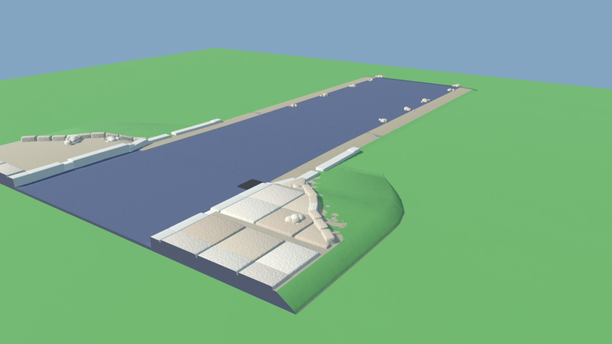
Die Landstraße war zuerst da. Die Stadt hat ihren Teil darauf gebaut und bis zum Ortsschild bezahlt: Gehweg, Bord, Rinne. Am Ortsschild hört ihr Bauwerk auf, und zwar gebaut: Der letzte Straßenablauf nimmt das Wasser aus der Rinne. Der Bord geht über einen Übergangsstein auf Tiefbord und endet mit einem Bordsteinkopf. Der Gehweg endet mit einem 45°-Schnitt mit Passsteinen und Kantenstein. Dahinter beginnt die Wiese und das Kiesbankett der Landstraße. Der Asphalt läuft unverändert durch, denn die Fahrbahn ist ein Guss. Nur loser Kies weht als Punktraster auf den Rand.
kein Farbverlauf · keine Fläche ohne Bauteil · Kies-Raster nur am Rand (≤ 1,2 breit)
Verbindlich (Konstruktion): Bauteile und Reihenfolge: letzter Ablauf, Übergangsstein, 3 Tiefbord, Bordsteinkopf, 45°-Schnitt mit Passsteinen und Kantenstein; Fahrbahn durchgehend
Schematisch: Abstände entlang der Straße, Lage des Ortsschilds; der Kies am Rand ist nur angedeutet, er wird organisch (siehe Oberflächen)
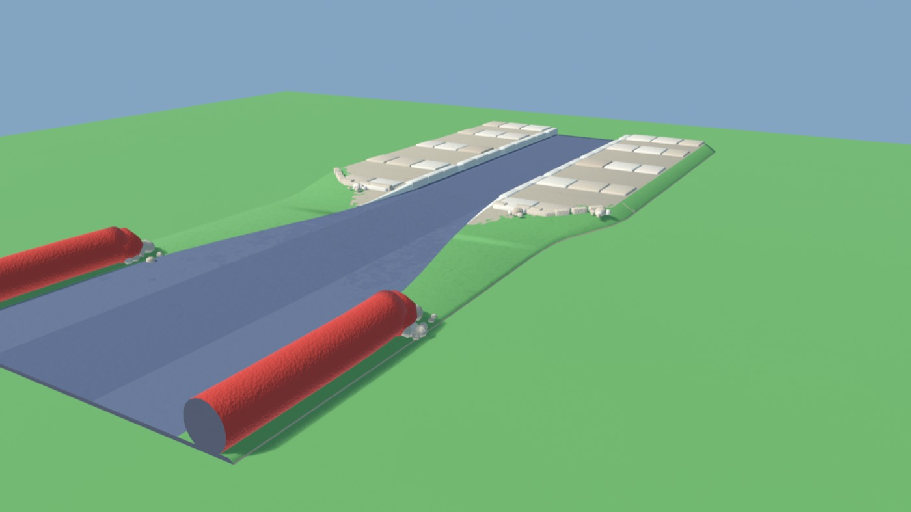
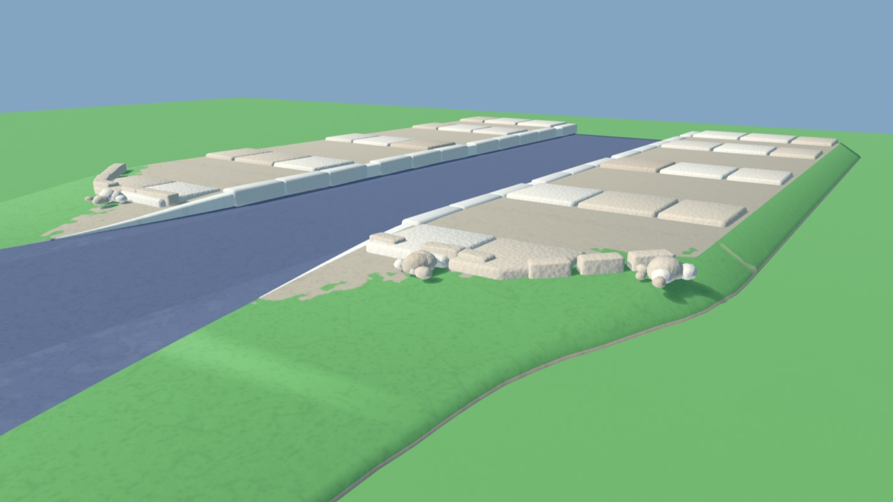
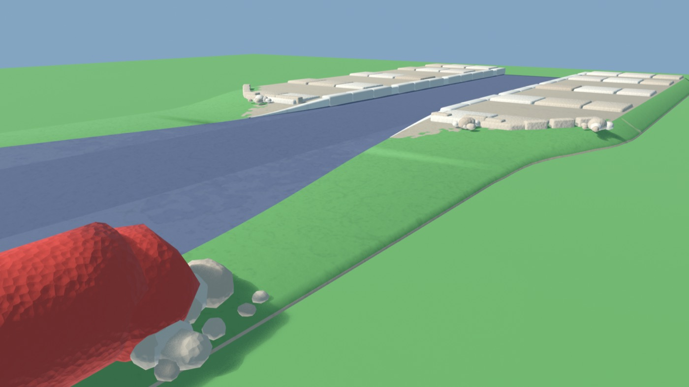
Am Straßenrand gibt es in der Inselwelt nur zwei Familien: den Bordstein der Stadt und die Joyride-Bande, rot, rund und knetig. Die Bandenbauer setzen ihren Strang bis zu ihrer Grenze. Dort schließen sie die Bande mit einer gebauten Kappe ab, einem gerundeten Wulst ohne Spitze, der halb im Boden sitzt; um ihren Fuß liegt Rubbel. Es folgt ein Grünstreifen. Dann setzt die Stadt einen Bordsteinkopf, den Bord und einen Gehweg, der mit einem 45°-Schnitt, gerundeten Kantensteinen und Rubbel beginnt. Die Fahrbahn läuft durch. Keine Wand, keine Reifen, keine Ebenen übereinander.
Bande ganz abgetaucht, bevor der Bord beginnt (Track Core, test-v015) · keine übereinanderliegenden Ebenen · jedes Ende gerundet mit Rubbel
Verbindlich (Konstruktion): Wandkopf + Anpralldämpfer, Grünstreifen ≥ 3,2, Bordsteinkopf, Gehweg mit 45°-Anfang, Randlinie B → S über 20; keine Überlagerung
Schematisch: Längen und Form des Wandkopfs
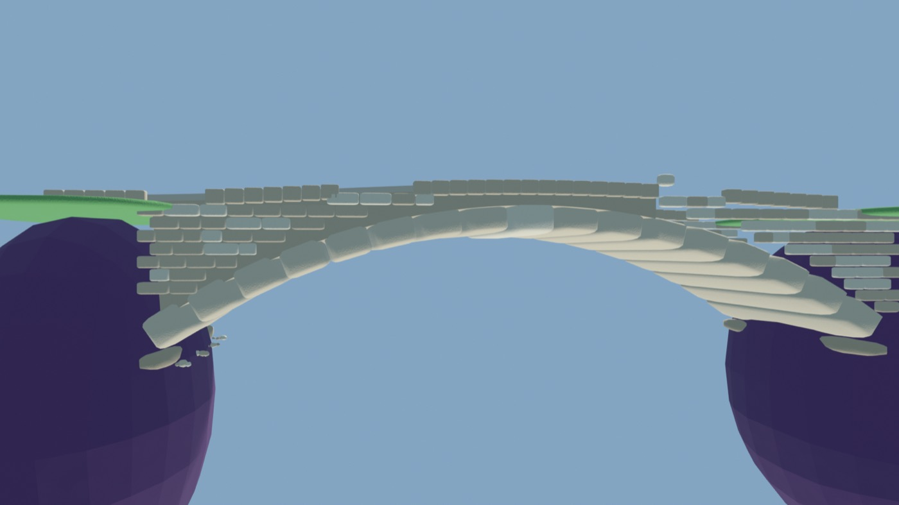
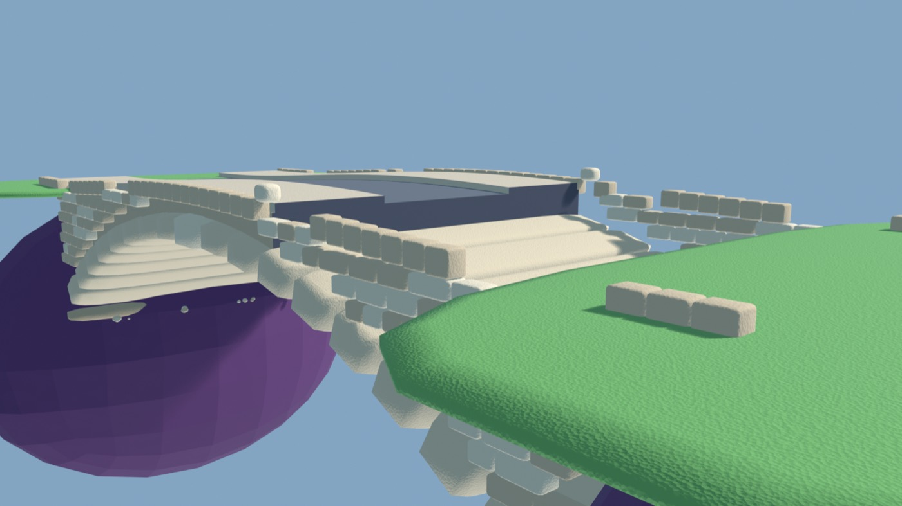
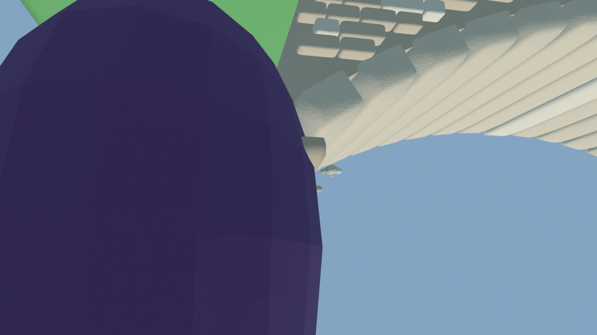
Die Inselleute wollten die Nachbarinsel erreichen (Vorbild: deine Referenz, eine Buckelbrücke mit Rundbogen). In die Felsflanken beider Inseln, etwa 12 unter der Grasnarbe, haben sie je eine Kämpferbank gehauen. Darauf stand ein Lehrbogen aus Holz, auf dem sie den Bogen aus großen Knetquadern gemauert haben; der Schlussstein kam zuletzt. Über dem Bogen tragen Zwickelmauern und Füllung die Fahrbahn, die dem Bogen als leichte Kuppe folgt. Oben läuft eine Steinbrüstung mit Deckplatte. Sie endet auf jeder Insel mit einem Endpfeiler, und Flügelmauern halten dort den Inselboden. Gehweg und Bord laufen über die Brücke durch.
Lastweg geschlossen: Fahrbahn → Zwickel → Bogen → Kämpferbank → Fels (Abstand 0) · keine Fläche ohne Tragglied · 0 Pfeiler · Render vorläufig prozedural, die Felsflanken kommen nach dem Lab-Umbau aus den echten Profilen
Verbindlich (Konstruktion): Tragwerk: Kämpfersitz im Fels, eigener Ring aus Bogensteinen mit Schlussstein, Zwickel in Steinlagen, Brüstung mit runden Decksteinen, Endpfeiler + Flügelmauer; Bogenscheitel unter der Fahrbahn; Lastweg bis in den Fels; 0 Pfeiler
Schematisch: Inselsilhouette (die echten Felsprofile von rkit_hub kommen vom Lab), Stich und Zahl der Steine (Buckel verbindlich: bis 8 %)
kfbLayer exakt wie in R2D v0 island.js, Zelle 1,1 und Sand-Bankettband „1 − smoothstep(hw + 0,6, hw + 3,4, d)“ aus R2D, umgerechnet mit × 1,46 (RACE_W: R2D rechnet in Track-Core-Metern, bestätigt von der Steuer-Sitzung), Zelle also ≈ 1,6. Die Schicht „Tropfen zurück“ ist nur in der Übergangszone aktiv. Das Muster ist in eine Bodentextur gebacken (Bake-Regel) und aus den Spielkameras gerendert, ohne Vergrößerung. Ehrlicher Befund Nahaufnahme (Laufhöhe 0,9 H, letztes Bild): Aus der Nähe verschmilzt das Muster zu größeren Flächen mit Tropfen am Rand; als Sprenkel liest es sich erst aus Fahr- und Mittelhöhe. Entscheidung offen: für die Nahsicht eine kleinere Zelle oder eine eigene Punkt-Lage. Stand 09.10.: Georg sucht ein anderes Referenzbeispiel; bis dahin ruht die Arbeit am Muster.
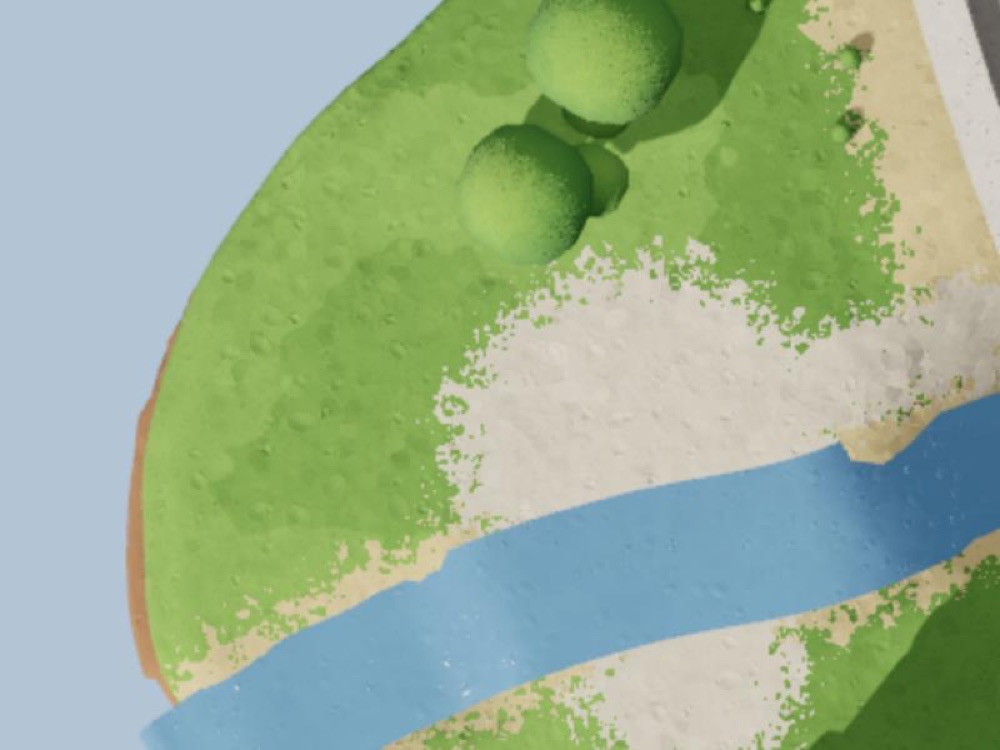
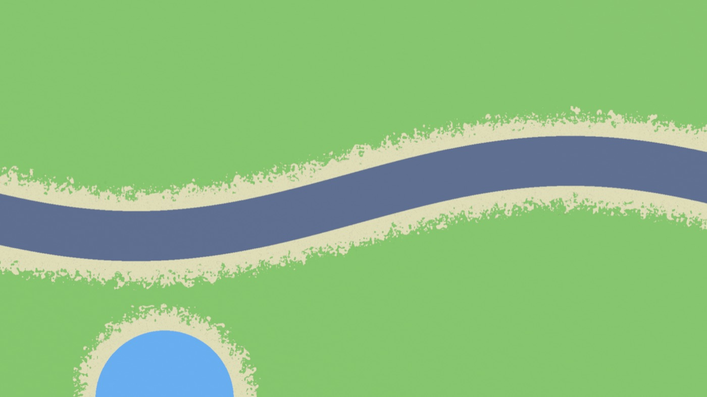
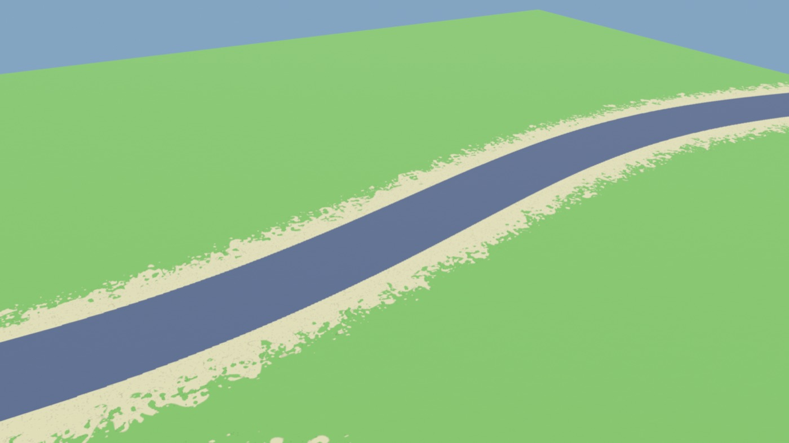
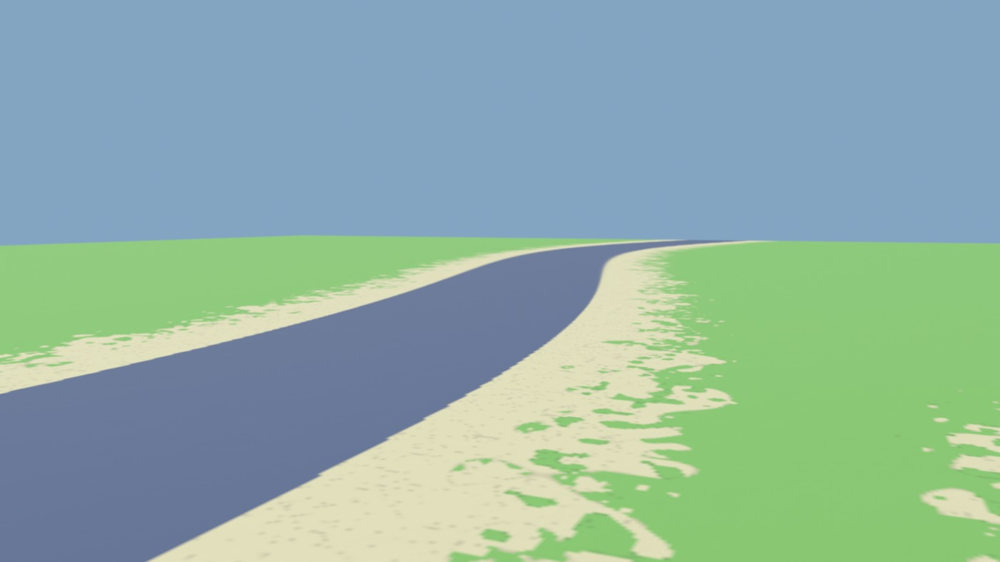
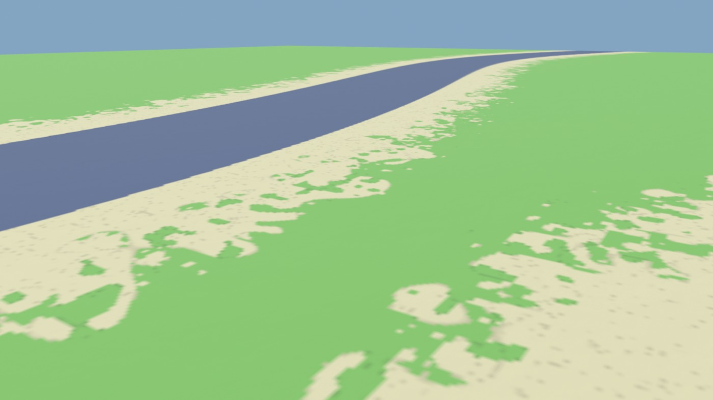
Eine Linie, die enden muss, zerfällt in ihren Takt: Die Mitte jedes Stücks bleibt auf dem Takt, die Länge fällt linear bis zum Quadrat, dann ist Schluss. Eine Stärkeänderung läuft als Keil über 20, die Außenkante bleibt bündig (M2).
rkit_hub (Profile kommen vom Lab).